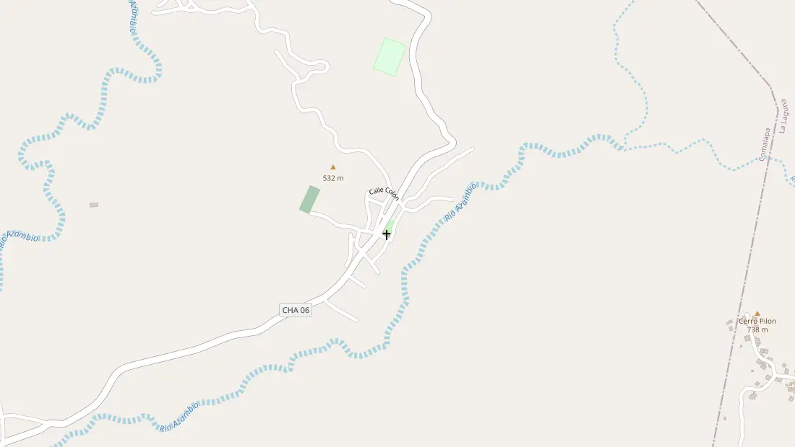

Cafeteria Aroma de Montaña
A café on Avenida Delgado, Chalatenango, with tables outside.
- Avenida Delgado, Chalatenango
- Outdoor seating
Hours and address
Your opening hours go here
OpenStreetMap has no opening hours for Cafeteria Aroma de Montaña yet. Send them over and they go in this table.

© OpenStreetMapOpen in OpenStreetMapAvenida DelgadoChalatenango